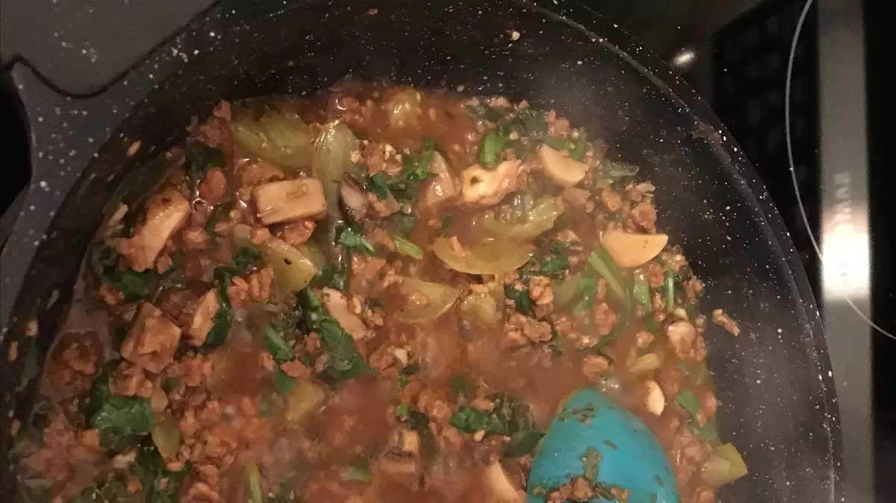

Vegan Spaghetti

Super tasty, low-fat vegan spaghetti is a celiac-friendly Italian dish.
- Prep: 20mins
- Cook: 20mins
- Total: 40mins
- Servings: 1
- Yeld: 1 serving
Ingredients
- 1 large zucchini
- ½ cup vegetable broth, or as needed, divided
- 1 small onion, diced
- 1½ tablespoons tomato paste
- 1 small tomato, diced
- 1 small portobello mushroom, cubed
- 1 tablespoon minced garlic
- 2 teaspoons dried oregano
- 1 teaspoon dried thyme
- ½ teaspoon dried tarragon
- ½ teaspoon dried marjoram
- ½ (12 ounce) package veggie meat substitute (such as Yves® Ground Round)
- 2 cups fresh spinach, roughly chopped
Steps
- Step 1: Cut zucchini into noodles using a spiralizer fitted with the large shredding blade. Set aside.
- Step 2: Combine 1/4 cup broth, onion, and tomato paste in a large saucepan over medium heat. Cook until onion begins to soften, about 3 minutes. Add tomato, mushroom, garlic, oregano, thyme, tarragon, and marjoram. Cook until the mushroom just begins to soften, about 3 minutes more.
- Step 3: Stir veggie meat, spinach, and remaining 1/4 cup broth into the pan with the mushroom mixture. Add an additional 1/4 cup broth if the pan seems dry. Cook and stir until vegetables are tender and sauce is beginning to thicken, about 10 minutes.
- Step 4: Stir zucchini noodles into the pan with the sauce and cook to desired firmness, 3 to 5 minutes more.